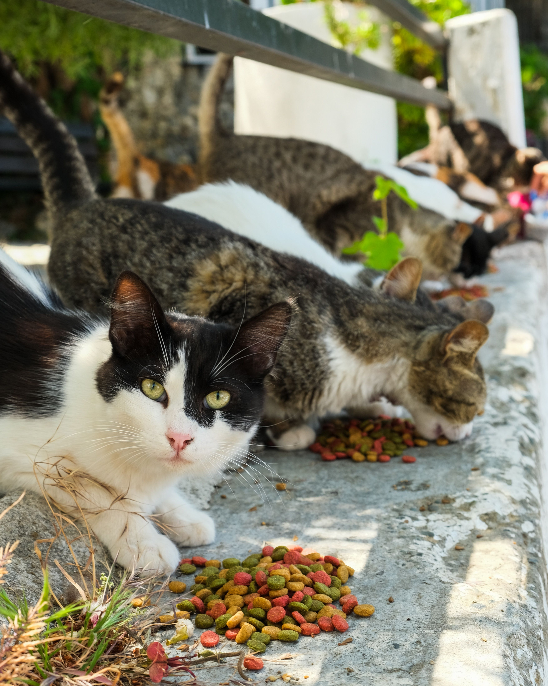
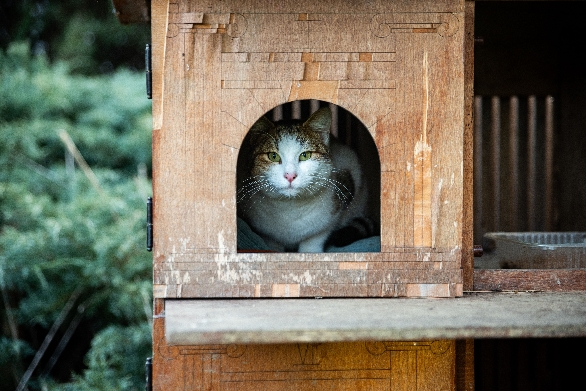
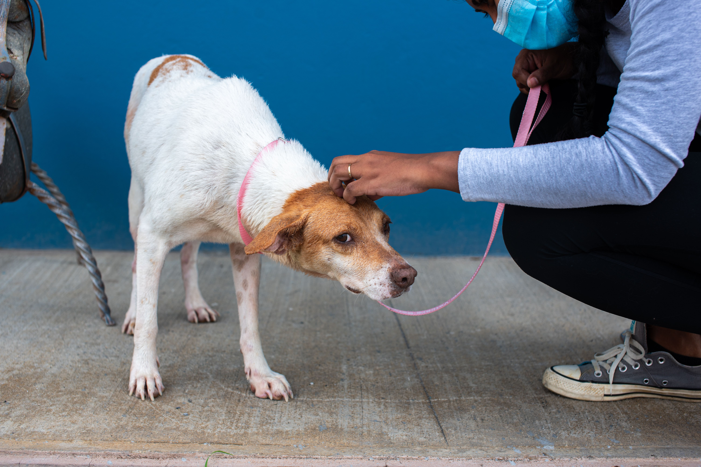
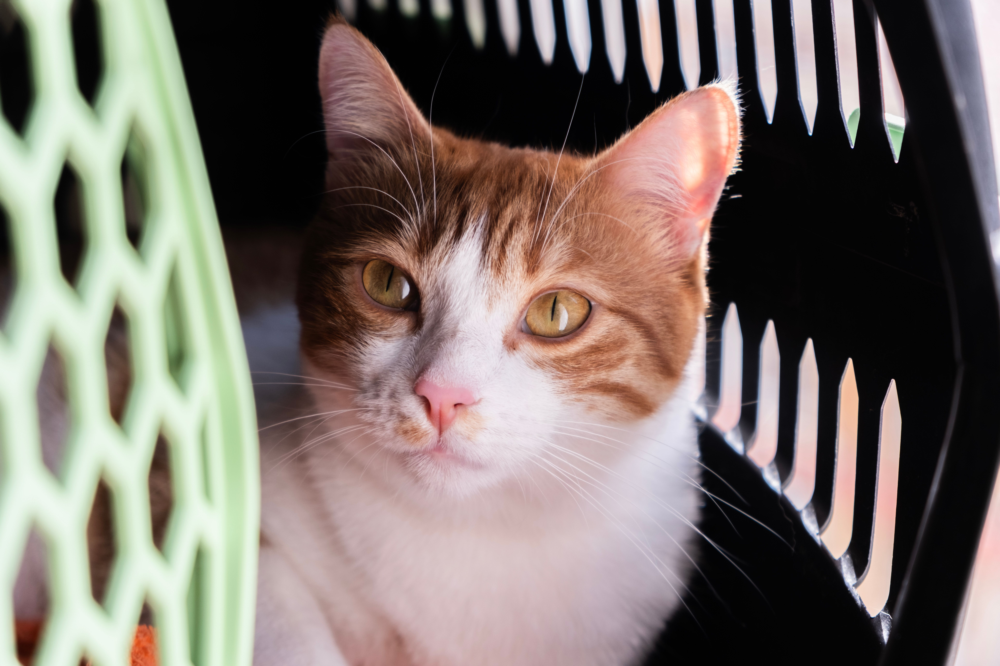

Colonias
Alimentar colonias
Cuidar y alimentar colonias callejeras cercanas a tu casa, siguiendo pautas y coordinación con el equipo para garantizar su bienestar.
"Actúa como si todas tus acciones marcaran la diferencia. Lo hacen." Tu ayuda, puntual o regular, puede marcar una gran diferencia para los animales de Irún.
Por qué se necesita
El grupo de voluntarios lo formamos personas totalmente comprometidas con los animales, pero que también atendemos nuestras obligaciones diarias. Por eso, en ocasiones no podemos acudir con la rapidez que requieren urgencias como gatos atropellados, heridos o abandonados.
Necesitamos ampliar el número de voluntarios: cuantos más seamos, más posibilidades habrá de que, ante una situación de emergencia, haya una persona que pueda atenderla.
No hace falta hacerlo todo. Puedes ayudar de forma puntual o regular, según tu disponibilidad y la zona en la que te encuentres.

Acciones
Estas son algunas de las formas de voluntariado que más marcan la diferencia en el día a día. Puedes ayudar de forma puntual o regular, según tu zona y disponibilidad.

Colonias
Cuidar y alimentar colonias callejeras cercanas a tu casa, siguiendo pautas y coordinación con el equipo para garantizar su bienestar.

Refugio
Preparar y montar refugios/casetas para que los gatos puedan resguardarse del frío y la lluvia, especialmente en épocas duras.

Urgencias
Apoyar en situaciones de urgencia (animales heridos, abandonados o en riesgo) cuando tu disponibilidad y cercanía lo permitan.

Veterinario
Ayudar con desplazamientos para revisiones, tratamientos o seguimientos veterinarios, facilitando su recuperación y atención.
Únete
Cuéntanos qué tipo de ayuda te gustaría ofrecer, tu disponibilidad y tu zona. Buscaremos juntas la forma más útil de colaborar.
Calle Santiago 27 1º Izq., Irún, 20304 · nebakadopciones@gmail.com